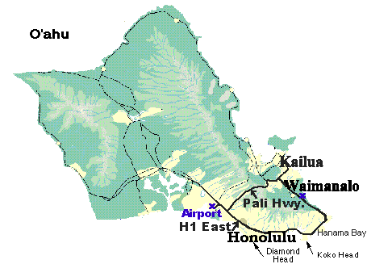

1999 Kaimana Klassik 12

From the Directors desk:
Welcome to the 12th annual invitational Kaimana Klassik. this year we have teams representing Australia, Europe and USA.we here at hula are planning yet another 5 Star tournament. Pam & Sonny Lopez along with Pam "Gumby" Martin have stepped up to fill the slots as men's & women's coordinator with Gumby as treasurer. The time is upon us to ask captains to submit complete team rosters and for players to pay their fees before the posted deadline. We would appreciate your kokua(help) in facilitating this ULTIMATE experience. Again, many mahalos and we look forward to seeing ole' friends and making new ones. Have safe journeys.
Johnny 99 (Director)
Place: Waimanalo, windward side of the island of Oahu, Hawaii.
Field Site: Waimanalo Polo Fields, 41-741 Kalanianaole Hwy.
Dates: Friday through Monday, Feb. 12,13,14, & 15th, 1999
Teams: 14 Men's & 10 Women's
| MEN'S: | WOMEN'S: |
|---|
| Southern Discomfort | Scooters Beaches |
| Nektar | Oahu |
| Girth | Cornell Roses |
| Princeton reunion | Colorado |
| Cornell buds | Sugar |
| Maui mana | Spinderella |
| Oahu | Stanford Alumni |
| Redfishbluefish | Lei Queens |
| Big island | Condors |
| Australia(shagmen) |
| Eurotrash |
| Stanford Alumni |
| Colorado |
|
Format: Two day pool play with semis and finals on monday
Friday: Registration 4-8pm(player packet pick up),dinner 6-8pm,captains meeting 9pm.
Saturday:Late registration 6:45am,breakfast,play 8:45am-5pm, dinner & party provided
Sunday:breakfast, play begins at 8:45am, luau dinner, must have aloha attire(grass skirts, aloha shirts, coconut bras etc) band
Monday:breakfast, play offs, award festivities
(schedules will be in player packets, at this time subject to change)
NOTE: play times will begin on time, if your team is not on the line when the horn blows...your biological clock is running.
COST per player:$125/ per player before deadline, $150/per player after
Payment deadline:Team captains are responsible for filling out a roster
sent to them and mailing it back to us along with all
player fees before 1/5/99. the late individual will be
charged a late fee of $25. $125+$25(late fee)=$150
All checks are to be made out to
HULA
P.O.Box 240638
Honolulu, HI. 96824-0638
Please be sure that all and any checks specify which team and roster they
apply to. Also, on the roster, mark down which two players are covered by
the $250 team deposit.
CAMPING: camping will be provided across the street from the polo fields at
Sherwood Forest(waimanalo beach). The entrance is almost directly across
the entrance from the polo fields. It's about a 15-20 minute walk to the
campsites from the fields. this campsite is right on the beach but the
designated areas to camp are under the ironwood trees. tents must be
pitched in the designated areas or you will be asked to move them by
security. There are nice sized bathrooms with cold water showers. At these
campsites, fires are only permitted in the designated pits. I recommend
light rain gear for the nights. we usually get a little drizzle in the
middle of the night and the ironwoods do serve as a bit of coverage. the
night time beach weather is nippy but not cold. those of us acclimated to
Hawaiian weather have become cold wimps, you guys will probably be hot.
the gates for vehicular traffic into the campsites locks at 7:00pm but
foot traffic is accessible at all times. DO NOT LEAVE ANY VALUABLES AT THE
CAMPSITE. KEEP ALL VALUABLES WITH YOU DURING THE DAY WHILE
AT THE POLO FIELDS.
Meals: Player fees include Friday night dinner, Saturday breakfast and
dinner. Sunday breakfast and luau dinner, monday breakfast and BBQ. Lunch
will be available at the fields by our caterer at your own cost. other
lunch options at your own cost, McDonalds across the street from the
fields. Next door to McD's is Mel's Market, a ma & pa grocery store
selling almost everything including killer ahi poke(raw fish Hawaiian
style). Down the road a little is keneke's BBQ serving kick ass plate
lunches Hawaiian style. next to that you can get shaved ice and there is
even a 7-eleven. Mcd's and mel's market are only about 10-15 minutes
walking, keneke's is about 5 minutes driving. although there is a
McDonalds and a 7-eleven don't let the corporation bum your aloha spirit,
you are still in the middle of waimanalo country guarded on one side by a
GREEN wall of Ancient lava with the ocean on the other side.
Staying all week: If you plan on staying for the following week after
Kaimana, before the Maui Hatdraw,
Cheap places to stay:
HOSTELS on Oahu
Brecks on the Beach
59-043 Huelo Street #2A
Haleiwa, HI. 96712
(808)638-7873
(808)373-9672
http://www.lava.net/brecks/directions.html
Backpacker
59-788 Kamehameha Hwy
Haleiwa, HI. 96712
(808)638-7838
Fax(808)638-7515
http://backpackers-hawaii.com/trans.html
Polynesian Hostel beach Club
2584 Lemon Road
Waikiki, HI. 96815
(808)922-1340
Fax(808)923-4146
http://macmouse.com/hostel/index1.html
Car rental Companies W/ Honolulu Airport phone #'s
Avis
(808)834-5536
budget
(808)537-3600
Dollar
(808)831-2330
National
(808)831-3800 just to make sure your car will be here in
Thrifty Hawaii when you are
(808)833-0046
Hertz
(808)831-3500
Alamo
(808)833-4585
Travel Agent
Charles Shaffer of Oaks Travel
21269 Stevens Creek Blvd.
Cupertino, CA. 95014
Phone 1-800-359-6694
Fax 1-408-253-0597
E-mail oakstravel@aol.com
1999 Maui Hatdraw
February 20th & 21st, 1999
Site:Eddie Tam Fields Makawao
Fee:$50 due 1/15/99
More info http://www.t-link.net/~tom/ultimate/hat99.html